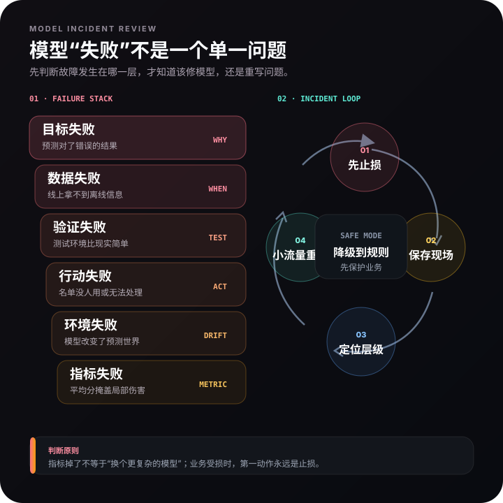

01目标失败
预测对了错误的结果
优惠券模型准确预测购买，却没有识别增量购买；客服模型复制了历史错误分单。
- 信号
- 模型指标稳定，业务收益不动。
- 修复
- 重写决策目标，必要时改为实验。
拆解泄漏、错目标、行动瓶颈、反馈回路与环境变化，建立模型叫停、修复和降级机制。
一个模型离线得分很高，上线后没有价值，通常不是一句“数据漂移”能够解释。你需要沿着目标、数据、验证、行动、监控五层逐一定位，而不是立即换成更复杂的算法。

优惠券模型准确预测购买，却没有识别增量购买；客服模型复制了历史错误分单。
投诉、退款、最终处理结果等未来字段进入训练，离线高分无法在线复现。
随机切分时间数据、同一用户同时出现在训练测试、只验证平日不验证大促。
模型给出九千条风险，运营只能处理八百条；预测到的问题本身也无法被行动改变。
高风险对象被持续干预后，标签分布变化；商家开始针对规则调整行为。
总体准确率提升，但新品、偏远地区或低频商家被系统性误判。
止损暂停自动动作或限制影响范围。
复现固定版本、数据、阈值与操作日志。
分层按时间、人群、地区、商品拆解失败。
归层判断目标、数据、验证、行动或环境问题。
重测与规则基线公平比较，小流量重新上线。
预警把本次失败变成监控与叫停条件。
复制历史错分标签；解决方法是抽样复核与低置信度人工兜底。
缺货导致销量截断；解决方法是标记不可完整观测并做区间估计。
购买概率不等于增量效果；解决方法是随机实验和因果评价。
曝光机制影响互动标签；解决方法是识别选择偏差与探索流量。
什么现象意味着失败：业务结果恶化、关键人群损失、数据延迟或字段缺失。
谁有权叫停：明确业务与技术负责人，不把决定留给临时会议。
如何降级：回到规则、人工或上一稳定版本。
怎样保留证据：保存模型版本、输入快照、阈值、输出与实际动作。
如何重新上线：修复后先影子运行，再小流量、带对照地扩大。
真正成熟的模型系统，不是从不失败。
而是知道何时不该建、何时必须停，以及怎样从失败中恢复。
模型失败不能只归因于算法。我会先判断是目标定义、数据泄漏、验证方式、行动承接还是环境变化出了问题；立即设置保护阈值或降级到规则，再用分群和时间回测复现问题，确认修复方案后小流量重启，并持续监控数据、策略和业务结果。